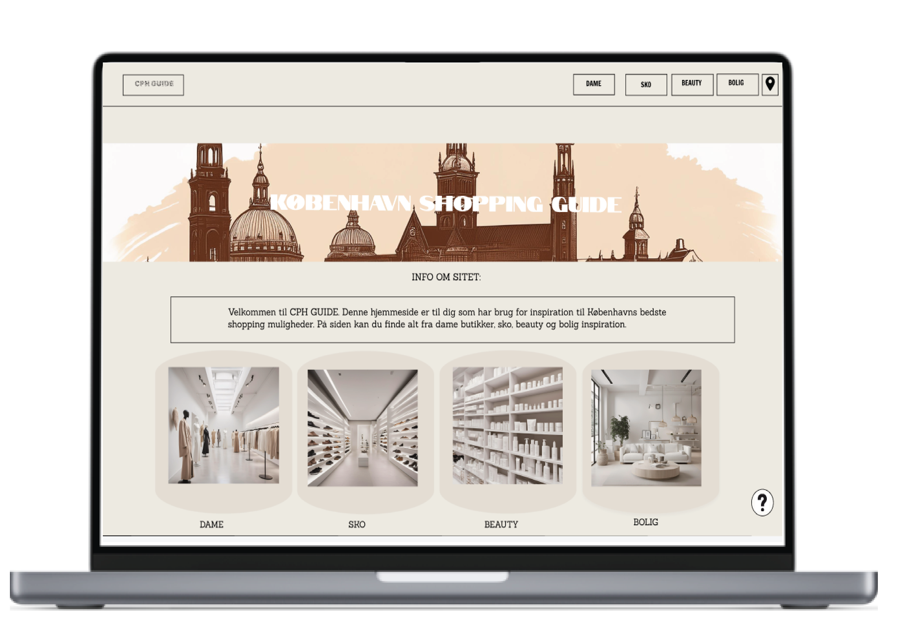

GRUNDLÆGGENDE UX/UI
I dette forløb om grundlæggende ux/ui, skulle vi designe vores eget emnesite, med et valgtfrit emne. Mit valgte emne omhandlede en København shopping guide, som giver et overblik over de bedste butikker i København. I dette forløb lærte jeg en masse om research og ide, for at finde frem til mit emne.
For at finde frem til det færdige produkt, lærte vi at designe flere styletiles ud fra værdi-ord. Vi lærte at lave moodboard, for at finde inspiration til vores site. Vi lærte at lave wireframes og layoutdiagrammer før vi gik igang med at kode. Udover dette lærte vi vigtigheden i at lave test på vores styletiles/website for at finde frem til den bedst mulige løsning til vores emnesite.